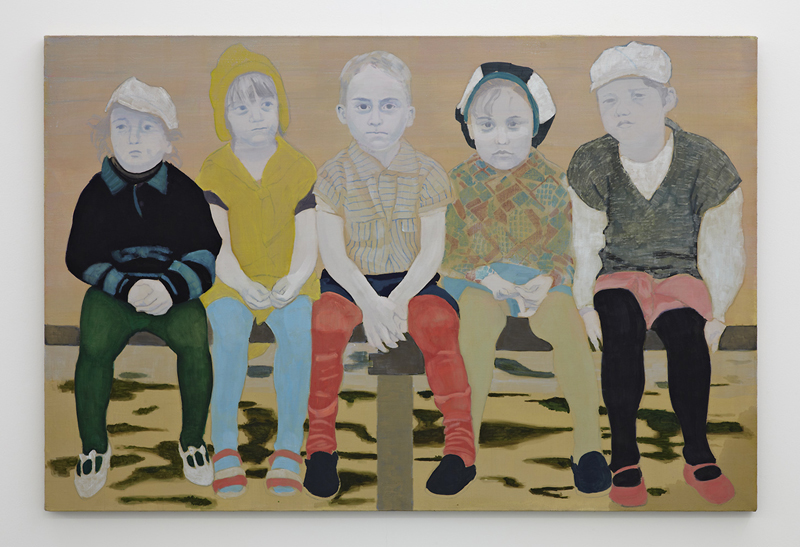
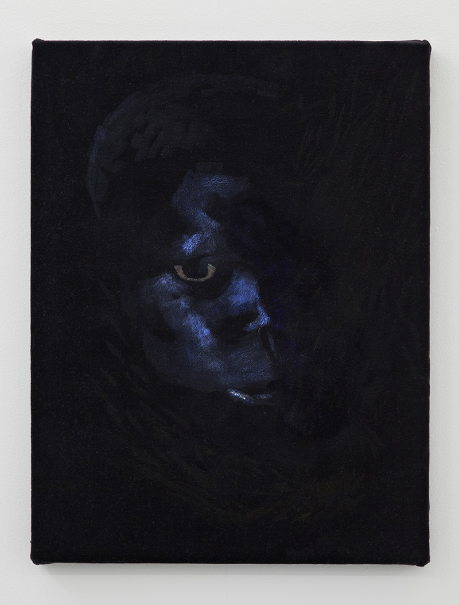
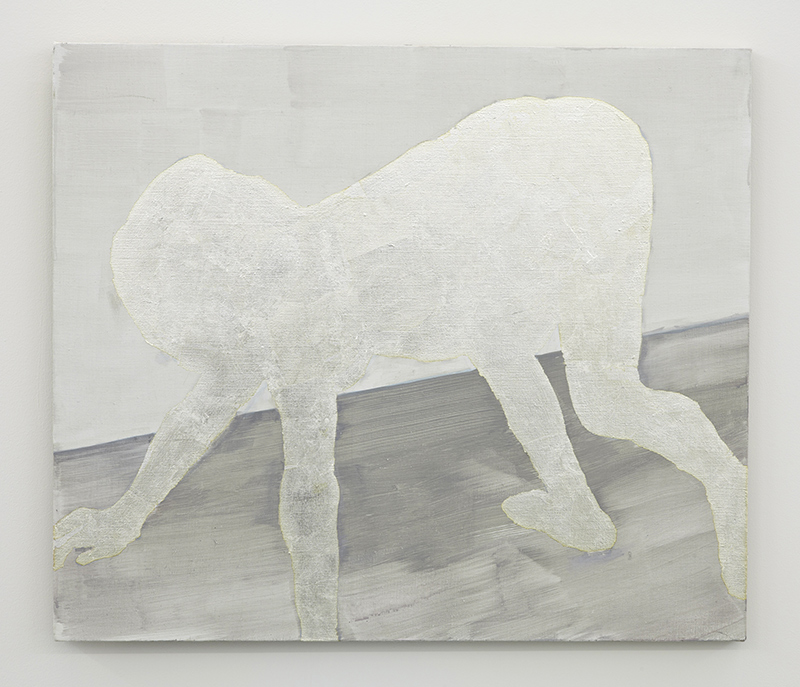
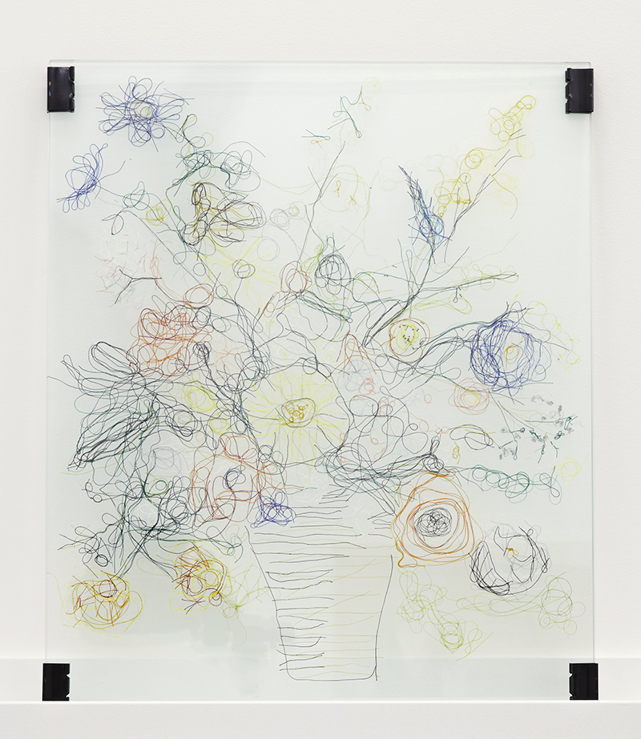
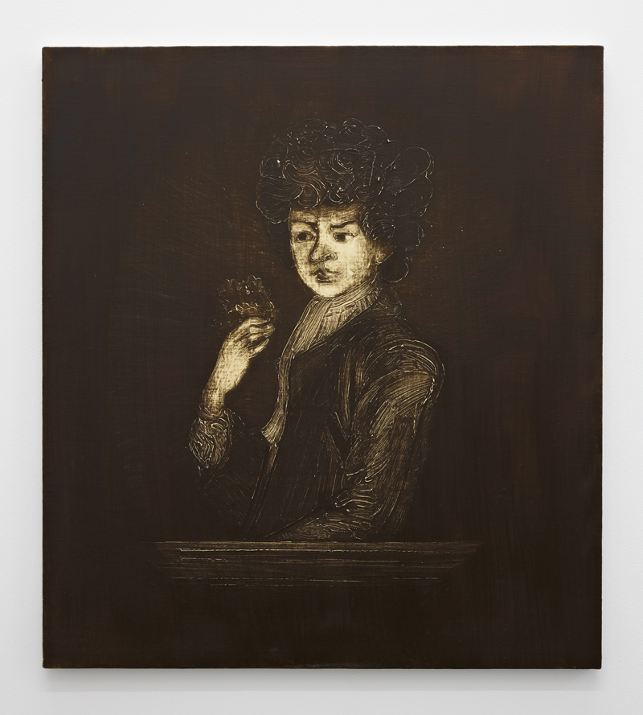
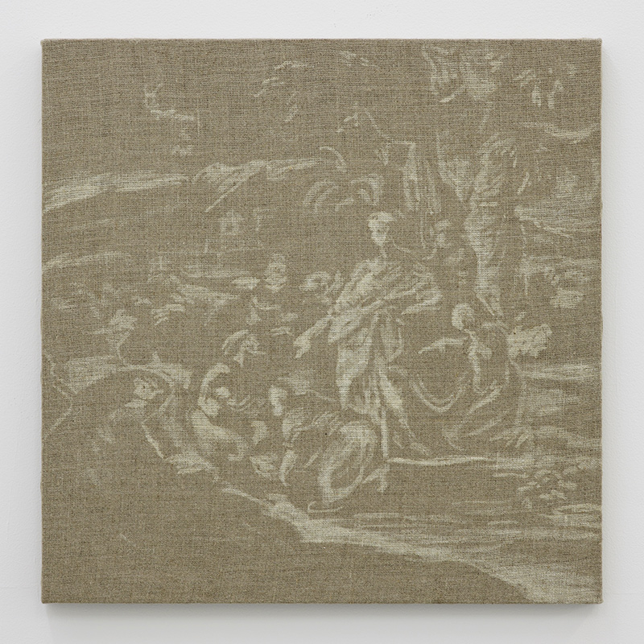
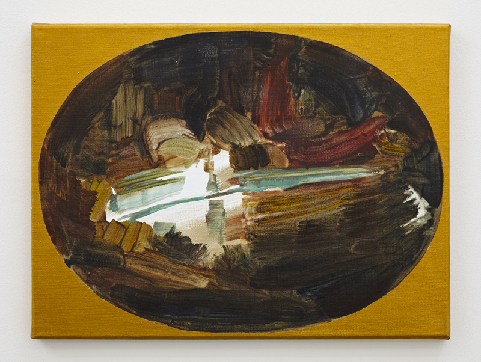
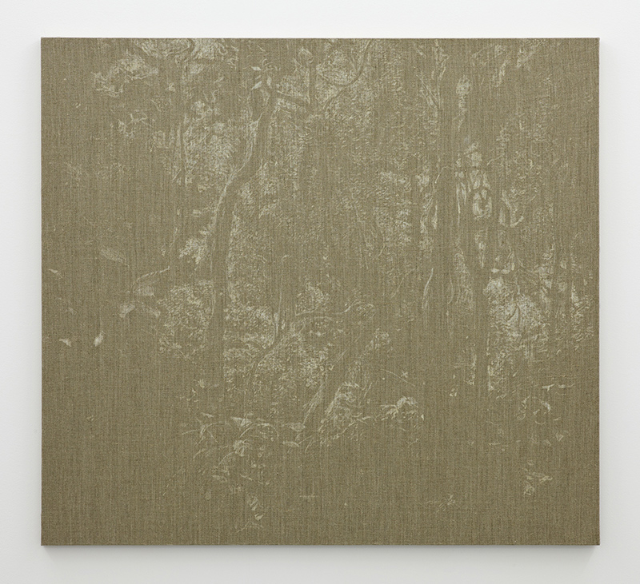

How does one experience the world when they lack the capacity of abstract thinking? Is our experience of the world "natural" or "artificial" — "abstract"?
Such questions have always been asked from the scientific and philosophic perspective. Polish painter Mela Yerka sees the death of painting as an opportunity for this medium to ask these questions from a new standpoint. Painting, she says, is always abstract. It is as artificial as can be. It is not part of this world. Therefore it is an ideal medium to question precisely this world.
120×80 cm, egg tempera and acrylic on linen (2012)

"John Ssebunya"
46.5×35.5 cm, oil on velvet (2012)

"Kamala"
60×70 cm, acrylic and silver leaf on linen (2012)

"Memmie Le Blanc"
48×40 cm, 2 glass panels and thread (2012)

"Peter the Wild Boy"
70×63 cm, oil on linen (2012)

"Finding of Moses after Luigi Garzi"
50×50 cm, bleach on linen (2012)

"Discovery of Moses after Rembrandt"
40.5×30.5 cm, oil on canvas (2012)

Untitled
100×110 cm, bleach on linen (2012)

How does one experience the world when they lack the capacity of abstract thinking? Is our experience of the world "natural" or "artificial" — "abstract"?
Such questions have always been asked from the scientific and philosophic perspective. Polish painter Mela Yerka sees the death of painting as an opportunity for this medium to ask these questions from a new standpoint. Painting, she says, is always abstract. It is as artificial as can be. It is not part of this world. Therefore it is an ideal medium to question precisely this world.
The pretext is the artist’s fascination with feral children – that is, children who grew up either in the outdoor wild, or were locked up in the space of their home. Language was not part of their existence, hence they lacked everything that would have distinguished them as humans. They were not able to think abstractly. Discovered at an older age, they were a source of joy for scientists and psychologists, who experimented heavily on them. Some re-entered society as humans, others became burdens and were forever lost. Their portraits on the gallery walls are spectres of humanity, never real embodiments. Their gazes are barriers, not links.
The question of abstraction is asked at many levels in the show. Although all the paintings are figurative — according to Mela, “abstract painting is merely a supplement to painting as such” — their arrangement in the white space constitutes a presentation of the abstract condition.
On a second level, one can access a narrative. This is conveyed by the presence of the children and some of their companions - as characters, and natural elements or objects that are immediately perceived as symbolical or even fetishist – as setting. “Can painting tell a story?” asks the artist. It always really tells its story of the relation figure-ground, and from here on the field is open. It can tell the story of these children, or the story of humanity. It can expand in time, or condense into presence. Going back and forth between these levels of abstraction, one is narrating their own endless story.
Would the children in these paintings be able to perform such operations? Painting is for humans, is what Mela Yerka shows. However hard we try to escape our condition, our attempts are still part of this world. What is left is the domain of imagination.